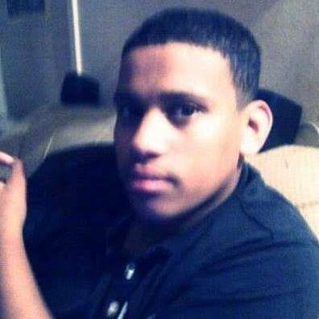

My name is Chad, I'm a chilled guy. I was born and raised in Cape Town, South Africa. Enjoys gaming, reading manga, comics and watching anime. I'm very fond of coding, its always been my aim to be a developer of all kinds. I like to strategize and like new adventures and very goal driven. My hobbies are singing, playing chess and Yu-GI-OH card game.



Garth is my Code Coach and he's extremely helpful and a friendly, I enjoy working with him. He's a good coach and can make your day with a fun ice breaker activity or by just telling the class a story or a little Joke. He treats us all as equals and each with respect.
When Garth reviews my projects and Challenges he'll always compliment me on areas I did good on and then tells me exactly where I can improve on. His assistance has been real helpful to my growth within the coding course. I have no complaint on his behaviorour or performance as I find it great.